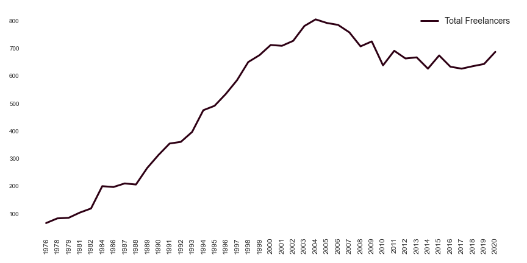
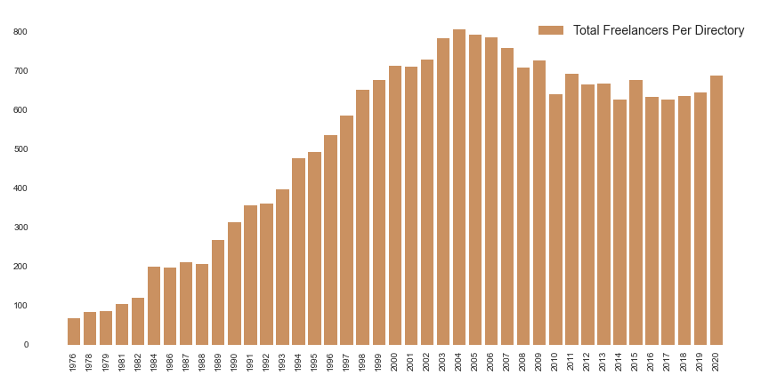
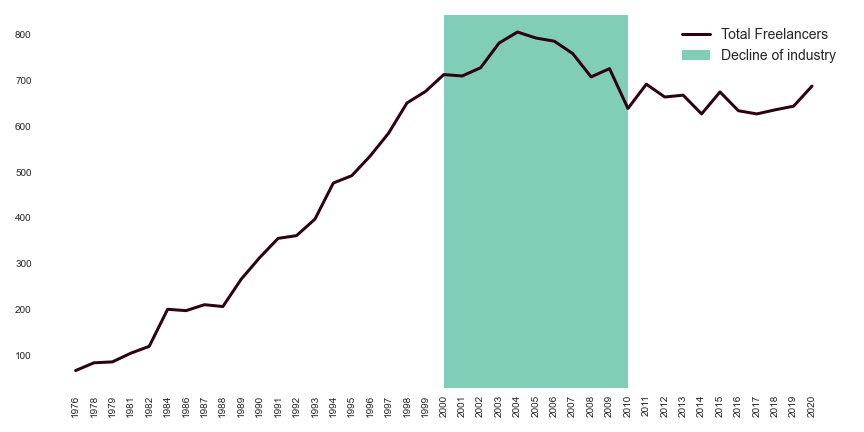
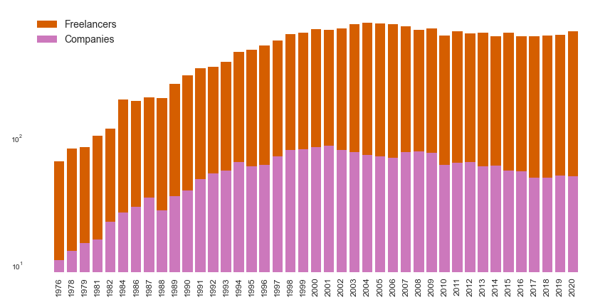
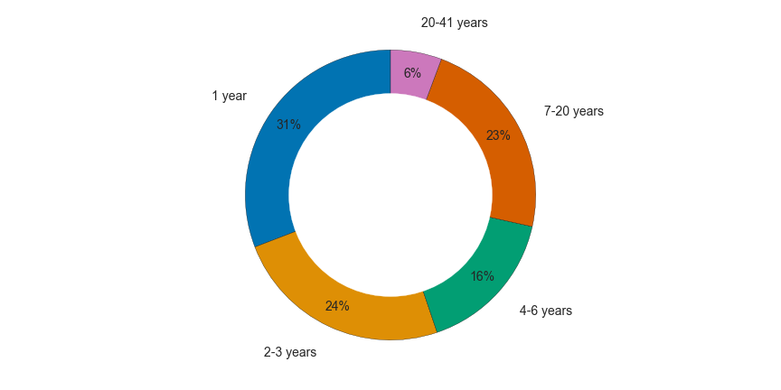

Freelance Crew by Year
Plot of freelancer numbers by year from 1976 - 2020. Broadly the numbers increase from just over 50 to a peak of around 800 in 2004. The numbers then decline to an average of between 650 and 700, for the years between 2009 and 2020
Film Bang Freelance Crew by Year
Bar chart of freelancer numbers by year from 1976 - 2020. Broadly the numbers increase from just over 50 to a peak of around 800 in 2004. The numbers then decline to an average of between 650 and 700, for the years between 2009 and 2020
Crew Gender by Year
Bar chart of freelancer numbers by year from 1976 - 2020 broken down by gender. Roughly, the gender balance is 60% male, 40% female from the early 90s to 2020. Earlier than that the majority of crew were male. In some cases gender is unknown and this constitutes a small percentage (less than 10%) between 1998 and 2020
History 1976 - 1990

Plot of freelance numbers by year showing a key timeframe between 1976 and 1990 when the number of freelancers rose from around 50 to around 300. There is a steep increase between 1982 and 1984, the numbers level off between 1984 and 1988 rising steeply again from 1988 to 1990. This period is annotated as 'Development of Screen Industry in Scotland'
History 1990 - 2000

Plot of freelance numbers by year showing a key timeframe between 1990 and 2000 when the number of freelancers continued to rise, from around 300 to around 700. The gradient is relatively constant throughout this period. This timeframe is annotated as 'Deregulation, changing technology, flexible working'
History 2000 - 2010
Plot of freelance numbers by year showing a key timeframe between 2000 and 2010 when the number of freelancers peaked and began to decline. Numbers are relatively constant between 2000 and 2002, rising steeply to a peak of just over 800 in 2004. Thereafter the numbers decline first gently then steeply. There is an increase between 2008 and 2009 of about 30. The numbers drop again from 2009 - 2010 by approximately 80. This timeframe is annotated as: 'Decline of Industry'
History 2010 - 2020

Plot of freelance numbers by year showing a key timeframe between 2010 and 2020. Numbers fluctuate between 650 and 700 throughout this period, showing an upturn from 2019 - 2020. This timeframe is annotated as : 'Increased Production, New Broadcasters'
Department Totals

Bar chart showing total listings in each department: Production: 816, Camera: 634, Art: 470, Direction: 282, Producer: 242, Post-production: 226, Sound: 205, Hair & Make-up: 201, Costume: 154, Music: 86, Support: 83, Script:79 , Casting: 76, Construction: 51, Special FX: 22, Trainee: 6.
Department Growth & Decline

Plot of listings in departments by year. Camera shows the most growth which is broadly constant over time, with fluctuations between 2008 and 2020. Production and Art show similar growth. Direction grows until 2003, peeking around 80 people. It then declines to around 40 in 2020. Producers department follows this pattern peeking at around 75 in 2000 and declining to 25 or so in 2020. Sound shows consistent growth but only peaks at approx 60 people and drops to around 50 in 2020. Hair and Make-Up grows steadily to a peak of around 50 in 2009. It then fluctuates and declines to around 25 people in 2020. Post-production grows by way of regular fluctiations to reach a peal of around 55 in 2015, declining to around 50 in 2020. Costume, Script, Construction, Casting, Special FX and Support fluctuate but remain at numbers of 20 or less for the history of the directory
Crew & Companies Comparison
Bar chart comparing numbers of freelancers with numbers of companies in the Film Bang Directory. Y axis uses logarithmic scale due to the large difference in numbers; crew against companies. Broadly the crew and companies numbers follow similar growth and decline.
Crew Longevity
Crew Longevity pie chart in the form of a ring. Crew in the directory for 1 year amount to 31% of listings. Crew listing for 2-3 years amount to 25% of all listings. Crew in for 4-6 years amount to 16%. Crew listing for 7 - 20 years make up 23% of all listings. Crew in for between 20 and 41 years amount to 6% of all listings.
Crew Longevity by Gender

Bar chart with data aggregated into bins showing Male, Female and Gender unknown numbers.
| 1 year | 2-3 years | 4-6 years | 7-11 years | 12-18 years | 19-29 years | 30-42 years | |
|---|---|---|---|---|---|---|---|
| Male | 589.0 | 459.0 | 315.0 | 274.0 | 179.0 | 131.0 | 34.0 |
| Female | 482.0 | 395.0 | 264.0 | 189.0 | 121.0 | 80.0 | 11.0 |
| Gender Unknown | 49.0 | 31.0 | 13.0 | 9.0 | 3.0 | 4.0 | 0.0 |
Career Longevity & Turnover

| Freelancer Longevity Over Time | 2020 Values | 2019 Values | 2018 Values | 2017 Values | 2016 Values | 2015 Values | 2014 Values | 2013 Values | 2012 Values | 2011 Values | 2010 Values | 2009 Values | 2008 Values | 2007 Values | 2006 Values | 2005 Values | 2004 Values | 2003 Values | 2002 Values | 2001 Values | 2000 Values | 1999 Values | 1998 Values | 1997 Values | 1996 Values | 1995 Values | 1994 Values | 1993 Values | 1992 Values | 1991 Values | 1990 Values | 1989 Values | 1988 Values | 1987 Values | 1986 Values | 1984 Values | 1982 Values | 1981 Values | 1979 Values | 1978 Values | 1976 Values |
|---|---|---|---|---|---|---|---|---|---|---|---|---|---|---|---|---|---|---|---|---|---|---|---|---|---|---|---|---|---|---|---|---|---|---|---|---|---|---|---|---|---|
| Years | |||||||||||||||||||||||||||||||||||||||||
| 1 | 171.0 | 114.0 | 95.0 | 102.0 | 72.0 | 104.0 | 80.0 | 96.0 | 75.0 | 98.0 | 68.0 | 112.0 | 83.0 | 108.0 | 107.0 | 109.0 | 129.0 | 124.0 | 97.0 | 106.0 | 122.0 | 132.0 | 119.0 | 115.0 | 99.0 | 93.0 | 119.0 | 77.0 | 77.0 | 83.0 | 82.0 | 77.0 | 32.0 | 33.0 | 59.0 | 89.0 | 30.0 | 29.0 | 18.0 | 29.0 | 66.0 |
| 2 | 74.0 | 55.0 | 70.0 | 56.0 | 69.0 | 62.0 | 66.0 | 56.0 | 52.0 | 53.0 | 64.0 | 54.0 | 76.0 | 77.0 | 74.0 | 85.0 | 96.0 | 86.0 | 78.0 | 84.0 | 109.0 | 83.0 | 95.0 | 83.0 | 75.0 | 86.0 | 64.0 | 67.0 | 54.0 | 58.0 | 54.0 | 23.0 | 28.0 | 53.0 | 50.0 | 28.0 | 26.0 | 15.0 | 22.0 | 54.0 | NaN |
| 3 | 35.0 | 49.0 | 43.0 | 52.0 | 40.0 | 51.0 | 34.0 | 41.0 | 45.0 | 59.0 | 40.0 | 63.0 | 54.0 | 56.0 | 70.0 | 78.0 | 73.0 | 73.0 | 73.0 | 92.0 | 69.0 | 74.0 | 75.0 | 65.0 | 74.0 | 50.0 | 58.0 | 45.0 | 49.0 | 48.0 | 19.0 | 28.0 | 44.0 | 41.0 | 19.0 | 24.0 | 12.0 | 21.0 | 45.0 | NaN | NaN |
| 4 | 35.0 | 38.0 | 41.0 | 34.0 | 38.0 | 34.0 | 36.0 | 28.0 | 51.0 | 36.0 | 47.0 | 42.0 | 39.0 | 46.0 | 63.0 | 60.0 | 64.0 | 62.0 | 77.0 | 59.0 | 64.0 | 62.0 | 62.0 | 67.0 | 42.0 | 51.0 | 46.0 | 45.0 | 35.0 | 20.0 | 26.0 | 40.0 | 33.0 | 18.0 | 17.0 | 13.0 | 17.0 | 39.0 | NaN | NaN | NaN |
| 5 | 29.0 | 38.0 | 27.0 | 29.0 | 29.0 | 32.0 | 20.0 | 40.0 | 33.0 | 53.0 | 32.0 | 30.0 | 39.0 | 53.0 | 53.0 | 61.0 | 51.0 | 65.0 | 52.0 | 54.0 | 52.0 | 52.0 | 60.0 | 40.0 | 46.0 | 43.0 | 38.0 | 31.0 | 15.0 | 25.0 | 40.0 | 32.0 | 13.0 | 15.0 | 11.0 | 14.0 | 34.0 | NaN | NaN | NaN | NaN |
| 6 | 32.0 | 23.0 | 30.0 | 21.0 | 28.0 | 22.0 | 27.0 | 24.0 | 43.0 | 29.0 | 24.0 | 32.0 | 40.0 | 46.0 | 52.0 | 41.0 | 54.0 | 41.0 | 53.0 | 44.0 | 47.0 | 54.0 | 35.0 | 42.0 | 38.0 | 34.0 | 26.0 | 13.0 | 22.0 | 37.0 | 29.0 | 10.0 | 15.0 | 10.0 | 12.0 | 32.0 | NaN | NaN | NaN | NaN | NaN |
| 7 | 16.0 | 30.0 | 20.0 | 22.0 | 19.0 | 26.0 | 22.0 | 36.0 | 34.0 | 21.0 | 25.0 | 38.0 | 43.0 | 46.0 | 40.0 | 47.0 | 36.0 | 47.0 | 41.0 | 43.0 | 48.0 | 32.0 | 40.0 | 34.0 | 34.0 | 22.0 | 13.0 | 21.0 | 35.0 | 29.0 | 9.0 | 14.0 | 8.0 | 14.0 | 29.0 | NaN | NaN | NaN | NaN | NaN | NaN |
| 8 | 26.0 | 19.0 | 17.0 | 19.0 | 24.0 | 21.0 | 32.0 | 29.0 | 19.0 | 23.0 | 31.0 | 37.0 | 39.0 | 34.0 | 43.0 | 34.0 | 44.0 | 39.0 | 43.0 | 42.0 | 29.0 | 36.0 | 31.0 | 26.0 | 22.0 | 11.0 | 19.0 | 33.0 | 24.0 | 7.0 | 15.0 | 10.0 | 11.0 | 26.0 | NaN | NaN | NaN | NaN | NaN | NaN | NaN |
| 9 | 19.0 | 15.0 | 22.0 | 21.0 | 19.0 | 34.0 | 24.0 | 20.0 | 19.0 | 28.0 | 32.0 | 33.0 | 30.0 | 32.0 | 30.0 | 44.0 | 38.0 | 41.0 | 40.0 | 28.0 | 31.0 | 26.0 | 25.0 | 18.0 | 11.0 | 17.0 | 31.0 | 20.0 | 6.0 | 13.0 | 9.0 | 13.0 | 22.0 | NaN | NaN | NaN | NaN | NaN | NaN | NaN | NaN |
| 10 | 17.0 | 20.0 | 19.0 | 15.0 | 30.0 | 20.0 | 20.0 | 20.0 | 25.0 | 25.0 | 24.0 | 29.0 | 26.0 | 28.0 | 36.0 | 37.0 | 37.0 | 36.0 | 25.0 | 29.0 | 24.0 | 22.0 | 18.0 | 11.0 | 15.0 | 29.0 | 19.0 | 6.0 | 13.0 | 8.0 | 13.0 | 20.0 | NaN | NaN | NaN | NaN | NaN | NaN | NaN | NaN | NaN |
| 11 | 17.0 | 15.0 | 15.0 | 28.0 | 16.0 | 17.0 | 19.0 | 24.0 | 25.0 | 25.0 | 26.0 | 28.0 | 26.0 | 31.0 | 32.0 | 31.0 | 30.0 | 22.0 | 26.0 | 22.0 | 19.0 | 16.0 | 12.0 | 14.0 | 25.0 | 19.0 | 6.0 | 12.0 | 5.0 | 10.0 | 17.0 | NaN | NaN | NaN | NaN | NaN | NaN | NaN | NaN | NaN | NaN |
| 12 | 14.0 | 11.0 | 23.0 | 14.0 | 13.0 | 18.0 | 23.0 | 23.0 | 25.0 | 24.0 | 28.0 | 22.0 | 29.0 | 30.0 | 28.0 | 27.0 | 20.0 | 25.0 | 21.0 | 18.0 | 16.0 | 10.0 | 14.0 | 19.0 | 18.0 | 6.0 | 11.0 | 5.0 | 10.0 | 17.0 | NaN | NaN | NaN | NaN | NaN | NaN | NaN | NaN | NaN | NaN | NaN |
| 13 | 8.0 | 21.0 | 16.0 | 11.0 | 17.0 | 21.0 | 20.0 | 22.0 | 22.0 | 29.0 | 21.0 | 26.0 | 27.0 | 26.0 | 25.0 | 21.0 | 24.0 | 20.0 | 16.0 | 14.0 | 10.0 | 14.0 | 19.0 | 16.0 | 5.0 | 10.0 | 5.0 | 7.0 | 16.0 | NaN | NaN | NaN | NaN | NaN | NaN | NaN | NaN | NaN | NaN | NaN | NaN |
| 14 | 17.0 | 12.0 | 9.0 | 14.0 | 20.0 | 19.0 | 20.0 | 19.0 | 26.0 | 19.0 | 26.0 | 28.0 | 21.0 | 23.0 | 19.0 | 20.0 | 18.0 | 17.0 | 14.0 | 9.0 | 13.0 | 18.0 | 13.0 | 6.0 | 10.0 | 4.0 | 6.0 | 15.0 | NaN | NaN | NaN | NaN | NaN | NaN | NaN | NaN | NaN | NaN | NaN | NaN | NaN |
| 15 | 11.0 | 8.0 | 13.0 | 17.0 | 20.0 | 18.0 | 16.0 | 23.0 | 16.0 | 27.0 | 22.0 | 21.0 | 24.0 | 17.0 | 20.0 | 15.0 | 16.0 | 14.0 | 9.0 | 13.0 | 18.0 | 13.0 | 5.0 | 10.0 | 3.0 | 5.0 | 15.0 | NaN | NaN | NaN | NaN | NaN | NaN | NaN | NaN | NaN | NaN | NaN | NaN | NaN | NaN |
| 16 | 8.0 | 14.0 | 14.0 | 14.0 | 16.0 | 14.0 | 18.0 | 15.0 | 24.0 | 20.0 | 16.0 | 22.0 | 17.0 | 19.0 | 14.0 | 14.0 | 12.0 | 10.0 | 12.0 | 18.0 | 12.0 | 5.0 | 9.0 | 3.0 | 5.0 | 13.0 | NaN | NaN | NaN | NaN | NaN | NaN | NaN | NaN | NaN | NaN | NaN | NaN | NaN | NaN | NaN |
| 17 | 11.0 | 14.0 | 14.0 | 12.0 | 12.0 | 19.0 | 15.0 | 22.0 | 19.0 | 17.0 | 19.0 | 15.0 | 17.0 | 13.0 | 14.0 | 11.0 | 11.0 | 13.0 | 17.0 | 10.0 | 5.0 | 8.0 | 3.0 | 4.0 | 13.0 | NaN | NaN | NaN | NaN | NaN | NaN | NaN | NaN | NaN | NaN | NaN | NaN | NaN | NaN | NaN | NaN |
| 18 | 14.0 | 11.0 | 12.0 | 10.0 | 16.0 | 14.0 | 21.0 | 20.0 | 17.0 | 16.0 | 12.0 | 17.0 | 9.0 | 13.0 | 11.0 | 9.0 | 13.0 | 15.0 | 9.0 | 4.0 | 8.0 | 4.0 | 4.0 | 12.0 | NaN | NaN | NaN | NaN | NaN | NaN | NaN | NaN | NaN | NaN | NaN | NaN | NaN | NaN | NaN | NaN | NaN |
| 19 | 11.0 | 12.0 | 10.0 | 16.0 | 13.0 | 22.0 | 18.0 | 17.0 | 15.0 | 11.0 | 13.0 | 9.0 | 11.0 | 10.0 | 9.0 | 12.0 | 12.0 | 8.0 | 4.0 | 7.0 | 4.0 | 4.0 | 12.0 | NaN | NaN | NaN | NaN | NaN | NaN | NaN | NaN | NaN | NaN | NaN | NaN | NaN | NaN | NaN | NaN | NaN | NaN |
| 20 | 11.0 | 10.0 | 17.0 | 13.0 | 21.0 | 19.0 | 15.0 | 13.0 | 8.0 | 12.0 | 7.0 | 11.0 | 10.0 | 9.0 | 10.0 | 11.0 | 7.0 | 4.0 | 7.0 | 3.0 | 4.0 | 11.0 | NaN | NaN | NaN | NaN | NaN | NaN | NaN | NaN | NaN | NaN | NaN | NaN | NaN | NaN | NaN | NaN | NaN | NaN | NaN |
| 21 | 11.0 | 17.0 | 12.0 | 17.0 | 18.0 | 14.0 | 10.0 | 8.0 | 12.0 | 10.0 | 9.0 | 8.0 | 10.0 | 9.0 | 11.0 | 6.0 | 4.0 | 6.0 | 3.0 | 3.0 | 9.0 | NaN | NaN | NaN | NaN | NaN | NaN | NaN | NaN | NaN | NaN | NaN | NaN | NaN | NaN | NaN | NaN | NaN | NaN | NaN | NaN |
| 22 | 14.0 | 10.0 | 16.0 | 19.0 | 14.0 | 8.0 | 7.0 | 11.0 | 8.0 | 9.0 | 8.0 | 10.0 | 8.0 | 10.0 | 5.0 | 4.0 | 5.0 | 3.0 | 3.0 | 8.0 | NaN | NaN | NaN | NaN | NaN | NaN | NaN | NaN | NaN | NaN | NaN | NaN | NaN | NaN | NaN | NaN | NaN | NaN | NaN | NaN | NaN |
| 23 | 7.0 | 15.0 | 17.0 | 11.0 | 7.0 | 7.0 | 9.0 | 9.0 | 9.0 | 4.0 | 10.0 | 8.0 | 10.0 | 5.0 | 5.0 | 4.0 | 2.0 | 3.0 | 8.0 | NaN | NaN | NaN | NaN | NaN | NaN | NaN | NaN | NaN | NaN | NaN | NaN | NaN | NaN | NaN | NaN | NaN | NaN | NaN | NaN | NaN | NaN |
| 24 | 13.0 | 15.0 | 10.0 | 7.0 | 8.0 | 8.0 | 8.0 | 10.0 | 4.0 | 9.0 | 8.0 | 10.0 | 4.0 | 5.0 | 4.0 | 2.0 | 2.0 | 8.0 | NaN | NaN | NaN | NaN | NaN | NaN | NaN | NaN | NaN | NaN | NaN | NaN | NaN | NaN | NaN | NaN | NaN | NaN | NaN | NaN | NaN | NaN | NaN |
| 25 | 16.0 | 10.0 | 6.0 | 5.0 | 8.0 | 8.0 | 10.0 | 4.0 | 8.0 | 8.0 | 9.0 | 4.0 | 6.0 | 2.0 | 1.0 | 2.0 | 8.0 | NaN | NaN | NaN | NaN | NaN | NaN | NaN | NaN | NaN | NaN | NaN | NaN | NaN | NaN | NaN | NaN | NaN | NaN | NaN | NaN | NaN | NaN | NaN | NaN |
| 26 | 9.0 | 5.0 | 5.0 | 8.0 | 8.0 | 10.0 | 4.0 | 9.0 | 6.0 | 9.0 | 4.0 | 6.0 | 2.0 | 1.0 | 2.0 | 8.0 | NaN | NaN | NaN | NaN | NaN | NaN | NaN | NaN | NaN | NaN | NaN | NaN | NaN | NaN | NaN | NaN | NaN | NaN | NaN | NaN | NaN | NaN | NaN | NaN | NaN |
| 27 | 4.0 | 5.0 | 8.0 | 7.0 | 7.0 | 4.0 | 8.0 | 6.0 | 9.0 | 4.0 | 4.0 | 2.0 | 1.0 | 2.0 | 8.0 | NaN | NaN | NaN | NaN | NaN | NaN | NaN | NaN | NaN | NaN | NaN | NaN | NaN | NaN | NaN | NaN | NaN | NaN | NaN | NaN | NaN | NaN | NaN | NaN | NaN | NaN |
| 28 | 6.0 | 6.0 | 7.0 | 6.0 | 5.0 | 6.0 | 5.0 | 9.0 | 3.0 | 4.0 | 2.0 | 2.0 | 1.0 | 8.0 | NaN | NaN | NaN | NaN | NaN | NaN | NaN | NaN | NaN | NaN | NaN | NaN | NaN | NaN | NaN | NaN | NaN | NaN | NaN | NaN | NaN | NaN | NaN | NaN | NaN | NaN | NaN |
| 29 | 6.0 | 9.0 | 3.0 | 3.0 | 6.0 | 5.0 | 9.0 | 4.0 | 3.0 | 2.0 | 2.0 | 1.0 | 6.0 | NaN | NaN | NaN | NaN | NaN | NaN | NaN | NaN | NaN | NaN | NaN | NaN | NaN | NaN | NaN | NaN | NaN | NaN | NaN | NaN | NaN | NaN | NaN | NaN | NaN | NaN | NaN | NaN |
| 30 | 8.0 | 1.0 | 2.0 | 4.0 | 5.0 | 8.0 | 4.0 | 2.0 | 2.0 | 2.0 | 1.0 | 6.0 | NaN | NaN | NaN | NaN | NaN | NaN | NaN | NaN | NaN | NaN | NaN | NaN | NaN | NaN | NaN | NaN | NaN | NaN | NaN | NaN | NaN | NaN | NaN | NaN | NaN | NaN | NaN | NaN | NaN |
| 31 | 1.0 | 2.0 | 4.0 | 5.0 | 7.0 | 4.0 | 2.0 | 2.0 | 2.0 | 1.0 | 5.0 | NaN | NaN | NaN | NaN | NaN | NaN | NaN | NaN | NaN | NaN | NaN | NaN | NaN | NaN | NaN | NaN | NaN | NaN | NaN | NaN | NaN | NaN | NaN | NaN | NaN | NaN | NaN | NaN | NaN | NaN |
| 32 | 1.0 | 3.0 | 5.0 | 7.0 | 3.0 | 2.0 | 2.0 | 2.0 | 1.0 | 5.0 | NaN | NaN | NaN | NaN | NaN | NaN | NaN | NaN | NaN | NaN | NaN | NaN | NaN | NaN | NaN | NaN | NaN | NaN | NaN | NaN | NaN | NaN | NaN | NaN | NaN | NaN | NaN | NaN | NaN | NaN | NaN |
| 33 | 2.0 | 3.0 | 7.0 | 3.0 | 2.0 | 2.0 | 1.0 | 1.0 | 4.0 | NaN | NaN | NaN | NaN | NaN | NaN | NaN | NaN | NaN | NaN | NaN | NaN | NaN | NaN | NaN | NaN | NaN | NaN | NaN | NaN | NaN | NaN | NaN | NaN | NaN | NaN | NaN | NaN | NaN | NaN | NaN | NaN |
| 34 | 3.0 | 7.0 | 3.0 | 2.0 | 2.0 | NaN | 1.0 | 3.0 | NaN | NaN | NaN | NaN | NaN | NaN | NaN | NaN | NaN | NaN | NaN | NaN | NaN | NaN | NaN | NaN | NaN | NaN | NaN | NaN | NaN | NaN | NaN | NaN | NaN | NaN | NaN | NaN | NaN | NaN | NaN | NaN | NaN |
| 35 | 5.0 | 3.0 | 2.0 | 2.0 | NaN | 1.0 | 1.0 | NaN | NaN | NaN | NaN | NaN | NaN | NaN | NaN | NaN | NaN | NaN | NaN | NaN | NaN | NaN | NaN | NaN | NaN | NaN | NaN | NaN | NaN | NaN | NaN | NaN | NaN | NaN | NaN | NaN | NaN | NaN | NaN | NaN | NaN |
| 36 | 2.0 | 2.0 | 1.0 | NaN | 1.0 | 1.0 | NaN | NaN | NaN | NaN | NaN | NaN | NaN | NaN | NaN | NaN | NaN | NaN | NaN | NaN | NaN | NaN | NaN | NaN | NaN | NaN | NaN | NaN | NaN | NaN | NaN | NaN | NaN | NaN | NaN | NaN | NaN | NaN | NaN | NaN | NaN |
| 37 | 2.0 | 1.0 | NaN | NaN | 1.0 | NaN | NaN | NaN | NaN | NaN | NaN | NaN | NaN | NaN | NaN | NaN | NaN | NaN | NaN | NaN | NaN | NaN | NaN | NaN | NaN | NaN | NaN | NaN | NaN | NaN | NaN | NaN | NaN | NaN | NaN | NaN | NaN | NaN | NaN | NaN | NaN |
| 38 | 1.0 | NaN | NaN | 1.0 | NaN | NaN | NaN | NaN | NaN | NaN | NaN | NaN | NaN | NaN | NaN | NaN | NaN | NaN | NaN | NaN | NaN | NaN | NaN | NaN | NaN | NaN | NaN | NaN | NaN | NaN | NaN | NaN | NaN | NaN | NaN | NaN | NaN | NaN | NaN | NaN | NaN |
| 39 | NaN | NaN | 1.0 | NaN | NaN | NaN | NaN | NaN | NaN | NaN | NaN | NaN | NaN | NaN | NaN | NaN | NaN | NaN | NaN | NaN | NaN | NaN | NaN | NaN | NaN | NaN | NaN | NaN | NaN | NaN | NaN | NaN | NaN | NaN | NaN | NaN | NaN | NaN | NaN | NaN | NaN |
| 40 | NaN | 1.0 | NaN | NaN | NaN | NaN | NaN | NaN | NaN | NaN | NaN | NaN | NaN | NaN | NaN | NaN | NaN | NaN | NaN | NaN | NaN | NaN | NaN | NaN | NaN | NaN | NaN | NaN | NaN | NaN | NaN | NaN | NaN | NaN | NaN | NaN | NaN | NaN | NaN | NaN | NaN |
| 41 | 1.0 | NaN | NaN | NaN | NaN | NaN | NaN | NaN | NaN | NaN | NaN | NaN | NaN | NaN | NaN | NaN | NaN | NaN | NaN | NaN | NaN | NaN | NaN | NaN | NaN | NaN | NaN | NaN | NaN | NaN | NaN | NaN | NaN | NaN | NaN | NaN | NaN | NaN | NaN | NaN | NaN |
New Entries & Dropouts by Year

| 1976 | 1978 | 1979 | 1981 | 1982 | 1984 | 1986 | 1987 | 1988 | 1989 | 1990 | 1991 | 1992 | 1993 | 1994 | 1995 | 1996 | 1997 | 1998 | 1999 | 2000 | 2001 | 2002 | 2003 | 2004 | 2005 | 2006 | 2007 | 2008 | 2009 | 2010 | 2011 | 2012 | 2013 | 2014 | 2015 | 2016 | 2017 | 2018 | 2019 | 2020 | |
|---|---|---|---|---|---|---|---|---|---|---|---|---|---|---|---|---|---|---|---|---|---|---|---|---|---|---|---|---|---|---|---|---|---|---|---|---|---|---|---|---|---|
| New Entries | 66 | 29 | 18 | 29 | 30 | 89 | 59 | 33 | 32 | 77 | 82 | 83 | 77 | 77 | 119 | 93 | 99 | 115 | 119 | 132 | 122 | 106 | 97 | 124 | 129 | 109 | 107 | 108 | 83 | 112 | 68 | 98 | 75 | 96 | 80 | 104 | 72 | 102 | 95 | 114 | 171 |
| Dropouts | 0 | -12 | -16 | -12 | -19 | -17 | -63 | -26 | -43 | -29 | -42 | -50 | -76 | -48 | -52 | -85 | -69 | -80 | -73 | -118 | -111 | -135 | -101 | -102 | -121 | -145 | -136 | -162 | -156 | -125 | -184 | -108 | -150 | -119 | -153 | -96 | -156 | -142 | -132 | -143 | -165 |